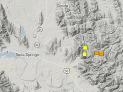

Soda Springs, Idaho
Weather Summary
Currently:
Temperature: °F
Humidity: %
Wind Speed: MPH
Wind Chill:
Five Day Forecast
Earthquake Near Soda Springs
“The United States Geological Survey (USGS) reported a magnitude 3.5 quake in the Idaho near the town of Soda Springs only 14 minutes ago. The earthquake hit early morning on Sunday 22 November 2020 at 4.04 am local time at a very shallow depth of 4 miles. The exact magnitude, epicenter, and depth of the quake might be revised within the next few hours or minutes as seismologists review data and refine their calculations, or as other agencies issue their report.”
A second report was later issued by the European-Mediterranean Seismological Centre (EMSC), which listed it as a magnitude 3.5 earthquake as well.
Based on the preliminary seismic data, the quake should not have caused any significant damage, but was probably felt by many people as light vibration in the area of the epicenter. Weak shaking might have been felt in Soda Springs (pop. 2,900) located 8 miles from the epicenter, Georgetown (pop. 500) 9 miles away, Grace (pop. 900) 13 miles away, and Bennington (pop. 200) 15 miles away.
Towns or cities near the epicenter where the quake might have been felt as very weak shaking include Montpelier (pop. 2,500) located 20 miles from the epicenter, Bancroft (pop. 400) 23 miles away, Paris (pop. 500) 25 miles away, and Preston (pop. 5,200) 39 miles away.”
Contact Information

123 Weather Eye Lane, Preston, Idaho 83263
(555) 555-5555
info@fakeweathereye.com